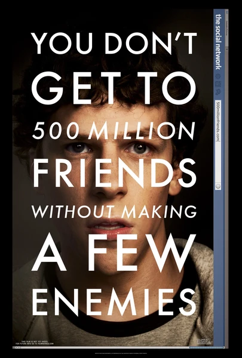

Фильм · 2010 · Биография, Драма
Осень 2003 года: девятнадцатилетний Марк Цукерберг создает сайт для оценки внешности сокурсниц — спустя полгода проект получает название Facebook и стремительно захватывает студенческие кампусы по всей стране. Финчер рассказывает историю не столько о технологиях, сколько о людях: о разрушенной дружбе, искренней вере в свой продукт и о том, что в стартапах, как и в тронных залах, победителей оценивают не только по качеству программного кода. Сценарий Соркина, в котором переговоры о доле в компании напоминают дуэли, обязателен к ознакомлению для всех, кто говорит: «У меня есть идея для стартапа».
Fall 2003: nineteen-year-old Mark Zuckerberg writes a site for rating classmates — within six months it is called Facebook and is wrecking campuses across the country. Fincher tells a story not about technology but about people: a friendship broken, genuine belief in the product, and the fact that in startups, as in throne rooms, winners are judged by more than code. Sorkin's screenplay, where equity negotiations sound like duels, is required viewing for anyone saying 'I have a startup idea'.